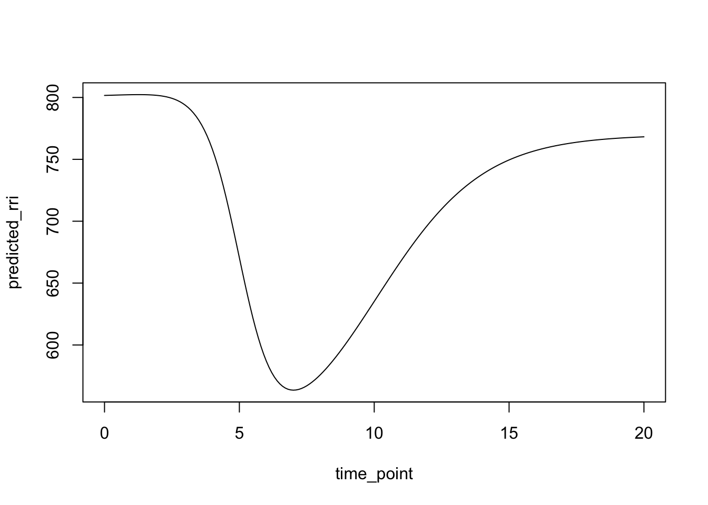
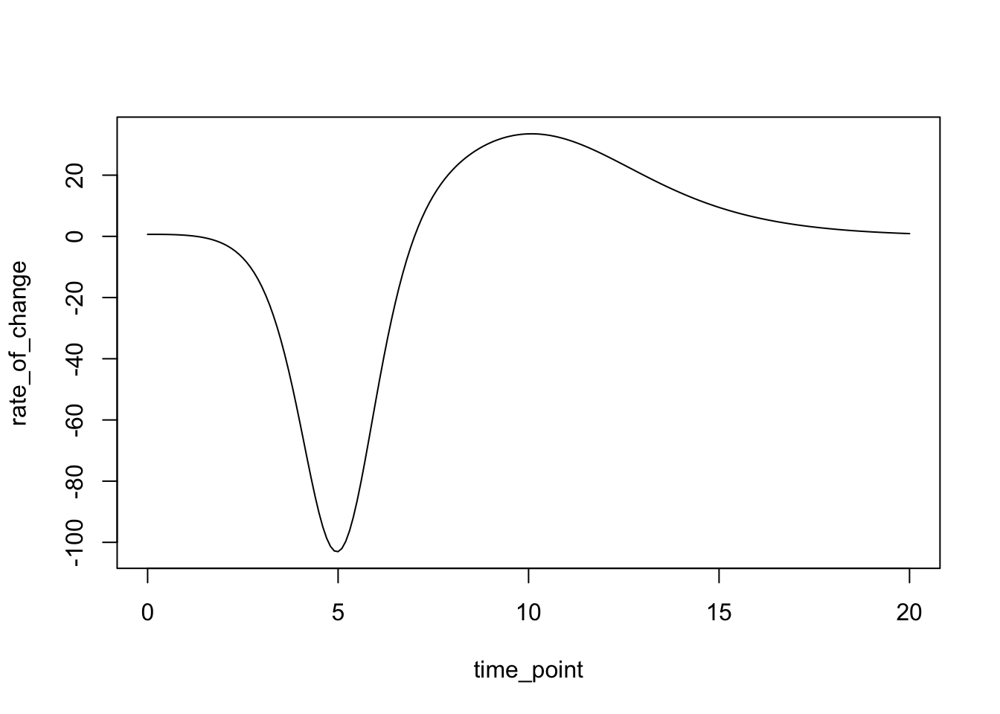

Adapting the Model: RRi Dynamics with the Actual Double Logistic Function (Expanded Universe Edition!)
Alright, alright, mea culpa acknowledged! We previously wandered off the reservation with a generic model, but thanks to your eagle eyes, we’re back on track with the specific Castillo-Aguilar et al. (2025) equation. Consider the imposter banished! Our noble quest remains: to model the often-dramatic, sometimes-infuriating rollercoaster ride of R-R intervals (RRi), that crucial time gap between heartbeats. Why RRi? Because sometimes looking at the time between beats, rather than the rate itself (remember, \(HR \approx 60 / RRi\)), gives a clearer view of the physiological drama unfolding, especially during events like exercise where your heart seems determined to beat its way out of your chest, followed by the slow, gasping crawl back to normalcy. This specific model is like a custom-built rollercoaster track, designed precisely to capture that characteristic plunge (RRi shortens) and the subsequent, hopefully proportional, climb back up (RRi lengthens).
The Real Double Logistic Model: Untangling the Equation Beast (Take 2 - Director’s Cut)
So, let’s once again lay our eyes upon the authentic artifact, the mathematical Rosetta Stone for this particular physiological phenomenon:
It might look like alphabet soup seasoned with Greek letters, but fear not! It’s just two S-shaped curves (sigmoids, technically logistic functions) bolted together. Think of it as describing two distinct phases of change. Why two? Because physiological responses are rarely simple up-or-down affairs. Often, there’s an initial reaction followed by a recovery or adaptation phase moving in a different direction or at a different speed. This equation gives us the flexibility to model such biphasic shenanigans. Let’s re-acquaint ourselves with the parameters, the knobs and dials controlling our RRi rollercoaster:
\(RRi(t)\): The variable we’re chasing, the R-R interval (often in milliseconds) at any given time (\(t\)). This is the output, the predicted position on our rollercoaster track at time \(t\).
\(\alpha\) (alpha): Our starting altitude, the baseline RRi. This is where your heart chills out before the stimulus (exercise, stress, that third cup of coffee) hits the system. It’s the physiological ‘ground level’ from which all changes are measured. Think of it as the stable RRi value during rest or before the experiment begins.
\(\beta\) (beta): The amplitude, or total vertical distance covered, by the first phase of the ride, typically the initial stress response. For exercise, \(\beta\) is usually negative because RRi gets shorter (heart rate increases). Its magnitude tells us how much the RRi changes in this first phase. It’s the height of the first big drop on our rollercoaster.
\(\lambda\) (lambda): The ‘steepness’ or rate parameter for that first phase. It controls how quickly the RRi changes around the midpoint (\(\tau\)) of this initial transition. A larger \(\lambda\) value means a faster, more abrupt change, like going over a sharp cliff edge. A smaller \(\lambda\) means a more gradual slope. Its units are typically inverse time (like 1/seconds), reflecting its nature as a rate constant.
\(\tau\) (tau): The temporal midpoint of the first phase. It’s the exact time point (t = \(\tau\)) where the rate of change during the initial phase is maximal (the steepest point on the first S-curve). It tells us when the first transition is centered.
\(-c\beta\): The amplitude of the second phase, representing the recovery. Here’s where the model gets clever. Instead of being independent, this amplitude is proportional to the first amplitude (\(\beta\)) via the factor -c. The constant c is a dimensionless proportionality factor (often between 0 and 1, representing the fraction of recovery). If c=1, the recovery amplitude perfectly mirrors the drop amplitude (in the opposite direction). If c=0.8, the recovery only makes up 80% of the initial drop. The negative sign cleverly ensures that if \(\beta\) caused a drop (negative \(\beta\)), then \(-c\beta\) causes a rise (positive value), assuming c itself is positive. This elegantly links the size of the recovery to the size of the initial stress response, a common physiological observation.
\(\phi\) (phi): The steepness parameter for the second (recovery) phase. Just like \(\lambda\), it controls how quickly the RRi changes during recovery, centered around the recovery’s own midpoint (t = \(\tau + \delta\)). A larger \(\phi\) means a faster recovery. It also has units of inverse time.
\(\delta\) (delta): The time delay parameter. It represents the time lag between the midpoint of the initial drop (\(\tau\)) and the midpoint of the recovery phase. The recovery phase is centered at time t = \(\tau + \delta\). This parameter explicitly links the timing of the recovery phase to the timing of the initial response, acknowledging that recovery doesn’t usually start instantly but after some delay.
This specific structure, with its linked parameters (\(-c\beta\) and \(\tau + \delta\)), is what makes the Castillo-Aguilar model distinct from a generic double logistic function. It bakes in assumptions about how the recovery relates to the initial perturbation, making it potentially more physiologically interpretable (or at least, more specific in its assumptions).
Implementing the Specific Double Logistic Function in R
Okay, enough theory, let’s talk code. Translating this equation, with its specific parameters and structure, into R requires careful mapping. We need to ensure our R function arguments correspond correctly to \(\alpha\), \(\beta\), \(\lambda\), \(\tau\), \(c\), \(\phi\), \(\delta\) and that the mathematical operations, especially those tricky exponents, are implemented exactly as written in the equation. Note that we use c_param in R for the proportionality constant c to avoid clashing with R’s built-in c() function (which combines values into a vector, a classic R naming collision trap!).
# Double Logistic Function for RRi(t)# Based *specifically* on the Castillo-Aguilar et al. (2025) equation provided.# This function calculates the RRi value at a specific time 't'.rri_double_logistic <-function(t, alpha, beta, lambda, tau, c_param, phi, delta) {# t: Time point ($t$)# alpha: Baseline RRi value (parameter $\alpha$)# beta: Amplitude of the first component (parameter $\beta$)# lambda: Steepness of the first component (parameter $\lambda$)# tau: Inflection time of the first component (parameter $\tau$)# c_param: Proportionality constant for recovery amplitude (parameter $c$)# phi: Steepness of the second component (parameter $\phi$)# delta: Delay for the second component's inflection time (parameter $\delta$)# Calculate the first logistic component (Exercise-induced Drop)# Corresponds to: $\beta / (1 + \exp(\lambda(t - \tau)))$ component1 <- beta / (1+exp(lambda * (t - tau)))# Calculate the second logistic component (Proportional Recovery)# Corresponds to: $(-c\beta) / (1 + \exp(\phi(t - \tau - \delta)))$# Amplitude is -c_param * beta# Inflection time is tau + delta component2 <- (-c_param * beta) / (1+exp(phi * (t - tau - delta)))# Calculate the final RRi value: $\alpha + component1 + component2$ rri_t <- alpha + component1 + component2return(rri_t)}# Example Usage (replace with plausible parameters based on the paper's context)time_point <-seq(0, 20, 0.1)baseline_alpha <-800# ms ($\alpha$)drop_amplitude_beta <--300# ms ($\beta$, negative for drop)drop_steepness_lambda <--1.5# ($\lambda$)drop_time_tau <-5# s ($\tau$)recovery_factor_c <-0.9# ($c$, e.g., 90% recovery)recovery_steepness_phi <--0.5# ($\phi$)recovery_delay_delta <-5# s ($\delta$)predicted_rri <-rri_double_logistic(t = time_point,alpha = baseline_alpha,beta = drop_amplitude_beta,lambda = drop_steepness_lambda,tau = drop_time_tau,c_param = recovery_factor_c,phi = recovery_steepness_phi,delta = recovery_delay_delta)plot(time_point, predicted_rri, type ="l")

There we go. Our R function now faithfully replicates the Castillo-Aguilar equation. But hold your horses! Our trusty numerical integrator, the leapfrog algorithm (or any similar method like Runge-Kutta), doesn’t operate on the RRi(t) value directly. It’s like a car’s engine, it needs fuel rate, not just the current position. It needs to know the instantaneous rate of change, the velocity of our RRi value. In mathematical terms, it demands the derivative: d(RRi)/dt. So, back to the glorious, sometimes painful, world of calculus we go!
Deriving the Rate of Change: \(\frac{d(RRi)}{dt}\) (Take 2, Now with More Calculus!)
Our mission, should we choose to accept it (and we must!), is to differentiate the authentic RRi(t) equation with respect to time t. This derivative will tell us exactly how fast the RRi is increasing or decreasing at any given moment.
Let’s write the equation again, prepping it for differentiation by expressing the fractions using negative exponents:
We’ll tackle this term by term, wielding the mighty chain rule like a seasoned warrior.
Step 1: Derivative of the Constant Baseline ()
The baseline \(\alpha\) is just a constant value, unchanging with time. Its rate of change is therefore zero. Zip. Nada.
\[
\frac{d}{dt}(\alpha) = 0
\]
Calculus is easy sometimes!
Step 2: Derivative of the First Logistic Term (/ …)
Now for the first real challenge: differentiating \(\beta \cdot [1 + \exp(\lambda(t - \tau))]^{-1}\).
Let’s use substitutions to make the chain rule clearer. Let \(u_1 = \lambda(t - \tau)\). Our term becomes \(\beta \cdot [1 + \exp(u_1)]^{-1}\).
The chain rule states \(\frac{d}{dt}[f(g(t))] = f'(g(t)) \cdot g'(t)\).
Let \(f(x) = \beta \cdot x^{-1}\). The derivative with respect to its argument x is \(f'(x) = -\beta \cdot x^{-2}\).
Let $ g(t) = 1 + (u_1)$ . We need its derivative \(g'(t) = \frac{d}{dt}[1 + \exp(u_1)]\). The derivative of 1 is 0, so \(g'(t) = \frac{d}{dt}[\exp(u_1)]\).
Time for another nested chain rule! Let \(h(u_1) = \exp(u_1)\), so \(h'(u_1) = \exp(u_1)\). We also need \(\frac{d(u_1)}{dt}\).
Since \(u_1 = \lambda(t - \tau) = \lambda t - \lambda \tau\), its derivative is \(\frac{d(u_1)}{dt} = \lambda\).
So, \(\frac{d}{dt}[\exp(u_1)] = h'(u_1) \cdot \frac{d(u_1)}{dt} = \exp(u_1) \cdot \lambda\).
This term represents the rate of change contributed by the recovery phase.
Step 4: Combine the Derivatives
The derivative of the sum is the sum of the derivatives. So, we add the results from steps 1, 2, and 3: \[
\frac{d(RRi)}{dt} = 0 + \left[ -\beta \lambda \frac{\exp(\lambda(t - \tau))}{(1 + \exp(\lambda(t - \tau)))^2} \right] + \left[ c \beta \phi \frac{\exp(\phi(t - \tau - \delta))}{(1 + \exp(\phi(t - \tau - \delta)))^2} \right]
\]
Cleaning it up, our final rate of change equation is:
This equation is the heart of the dynamics for our integrator. It calculates the instantaneous slope (the speed and direction of change) of the RRi(t) curve at any given time t. It’s the recipe the integrator needs to figure out where to go next.
Implementing the Specific Derivative Function in R
Now, we translate this beautiful (or terrifying, depending on your relationship with calculus) derivative formula into R code. We need to be careful with signs and ensure all the parameters (\(\alpha\), \(\beta\), \(\lambda\), \(\tau\), \(c\), \(\phi\), \(\delta\)) are correctly used.
# Derivative of the *Specific* Castillo-Aguilar Double Logistic Function w.r.t. time (t)# This function calculates d(RRi)/dt at a specific time 't'.# This is the function needed as the 'static_function' for the leapfrog integrator.rri_double_logistic_derivative <-function(t, alpha, beta, lambda, tau, c_param, phi, delta) {# Parameters are the same as rri_double_logistic:# t ($t$), alpha ($\alpha$), beta ($\beta$), lambda ($\lambda$), tau ($\tau$),# c_param ($c$), phi ($\phi$), delta ($\delta$)# Calculate terms for the first component's derivative# Corresponds to: $-\beta \lambda \exp(\lambda(t - \tau)) / (1 + \exp(\lambda(t - \tau)))^2$ exp_term1 <-exp(lambda * (t - tau))# Note the crucial minus sign from the derivation: -beta * lambda * ... deriv_comp1 <--beta * lambda * exp_term1 / (1+ exp_term1)^2# Calculate terms for the second component's derivative# Corresponds to: $c \beta \phi \exp(\phi(t - \tau - \delta)) / (1 + \exp(\phi(t - \tau - \delta)))^2$ exp_term2 <-exp(phi * (t - tau - delta))# Note the positive sign here: c_param * beta * phi * ... deriv_comp2 <- c_param * beta * phi * exp_term2 / (1+ exp_term2)^2# The derivative of alpha is 0, so we just sum the component derivatives dRRi_dt <- deriv_comp1 + deriv_comp2return(dRRi_dt)}# Example Usage (using the same parameters as before)rate_of_change <-rri_double_logistic_derivative(t = time_point,alpha = baseline_alpha,beta = drop_amplitude_beta,lambda = drop_steepness_lambda,tau = drop_time_tau,c_param = recovery_factor_c,phi = recovery_steepness_phi,delta = recovery_delay_delta)plot(time_point, rate_of_change, type ="l")

Fantastic. Our R code now perfectly mirrors the derived d(RRi)/dt formula. This function is ready to be plugged into the leapfrog integrator as the core ‘dynamics’ or ‘force’ function (if we were thinking in physics terms).
Defining the Gradient for the Leapfrog Integrator (The Sound of Silence: Still Zero!)
Now, for the final piece required by some integrators like the Velocity Verlet variant of leapfrog: the gradient. This means we need to know how the rate of change itself changes if the current state changes. Mathematically, we need the derivative of our \(\frac{d(RRi)}{dt}\) function with respect to the state variable, RRi. Let’s denote this as \(\frac{d}{d(RRi)}\left[\frac{d(RRi)}{dt}\right]\).
In systems where the rate of change depends on the current state (e.g., population growth depending on current population size, or our very first simple heart rate model), this gradient is non-zero and crucial. It tells the integrator how the ‘velocity’ field changes as you move through the state space.
But let’s scrutinize our hard-earned rate of change equation one more time: \[
\frac{d(RRi)}{dt} = -\beta \lambda \frac{\exp(\lambda(t - \tau))}{(1 + \exp(\lambda(t - \tau)))^2} + c \beta \phi \frac{\exp(\phi(t - \tau - \delta))}{(1 + \exp(\phi(t - \tau - \delta)))^2}
\]
Look closely at the right-hand side. It contains time (t) and a whole bunch of fixed parameters (\(\alpha\), \(\beta\), \(\lambda\), \(\tau\), \(c\), \(\phi\), \(\delta\)). But where is the variable RRi (the current R-R interval)? It’s nowhere to be found! The rate of change, according to this specific model, is entirely determined by what time it is (t) and the fixed shape parameters, not by the current value of RRi.
What happens when you differentiate an expression with respect to a variable that doesn’t appear in it? The result is a resounding ZERO.
This is a key feature (or limitation, depending on your perspective) of this type of time-driven model. The trajectory is predetermined by the clock and the parameters; the system doesn’t dynamically react to its own current state value when deciding its rate of change. For our leapfrog integrator, this means the gradient calculation becomes wonderfully trivial.
Implementing the Gradient Function in R (Elegantly Simple)
So, the R function for the gradient, while needing all the parameters in its signature to potentially match the integrator’s requirements, has the simplest possible implementation: it just returns 0.
# Gradient of the *Specific* Castillo-Aguilar RRi rate-of-change function w.r.t. RRi# This function calculates d/d(RRi) [d(RRi)/dt]gradient_rri_derivative <-function(current_rri, t, alpha, beta, lambda, tau, c_param, phi, delta) {# current_rri: The current RRi value (state variable, $RRi$)# t: The current time ($t$)# Other parameters: Model parameters ($\alpha, \beta, \lambda, \tau, c, \phi, \delta$)# Since d(RRi)/dt, as defined by the Castillo-Aguilar model,# does NOT explicitly depend on the current value of RRi,# its derivative with respect to RRi is simply 0.return(0)}
And that concludes our expanded tour! We’ve meticulously dissected the specific Castillo-Aguilar et al. (2025) model, translated it and its time derivative into R, performed the necessary calculus with extra commentary, formatted our math nicely, and confirmed the gradient needed by the leapfrog integrator is zero for this particular time-driven model. Your simulation toolkit is now properly calibrated and significantly better explained!